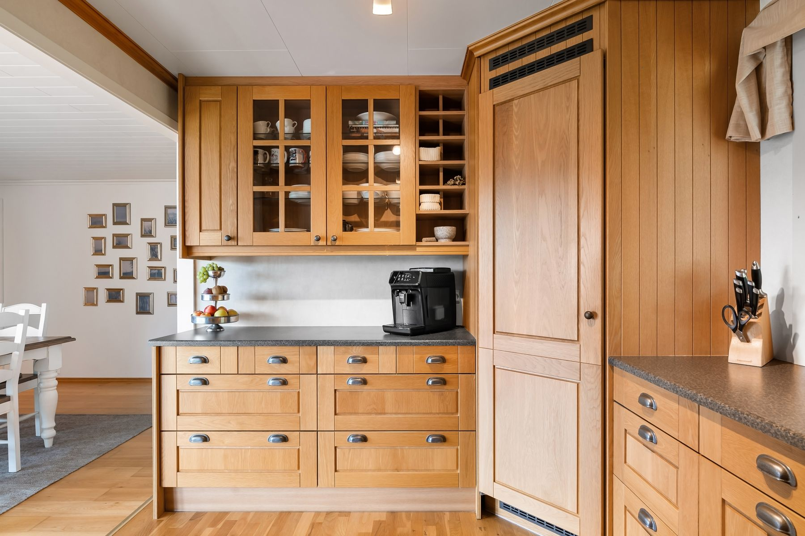

PLASSBYGD I TRE
Bygd for
rommet du har.
Kjøkken, garderober og møbler tenkt for livet som leves mellom veggene.
Se løsningenET NETTSTEDSKONSEPT AV NETTSTRAX

ROM FOR
HVERDAGEN
EN LØSNING, MANGE MULIGHETER
Når innredningen
følger rommet.
Et kjøkken skal gi plass til både hverdagsrutiner og det som samler oss. Med skap og åpne hyller kan oppbevaringen finne sin plass uten å ta over rommet.
Referansefotoet viser et ekte interiør. Det er brukt som inspirasjon i dette fiktive designkonseptet, og er ikke presentert som et arbeid levert av Årring.
EN GOD IDÉ STARTER HER
Først rommet.
Så resten.
Et godt sted å begynne er å fortelle hva rommet brukes til, hva som mangler og hvilke materialer du liker. Derfra kan en løsning ta form rundt hverdagen din.
Fortell oss om prosjektetHAR DU ET ROM I TANKENE?
La oss begynne
med en idé.
Fortell litt om rommet og hva du ønsker deg.
Årring er en fiktiv bedrift. Skjemaet er en demonstrasjon og sender ikke informasjon.